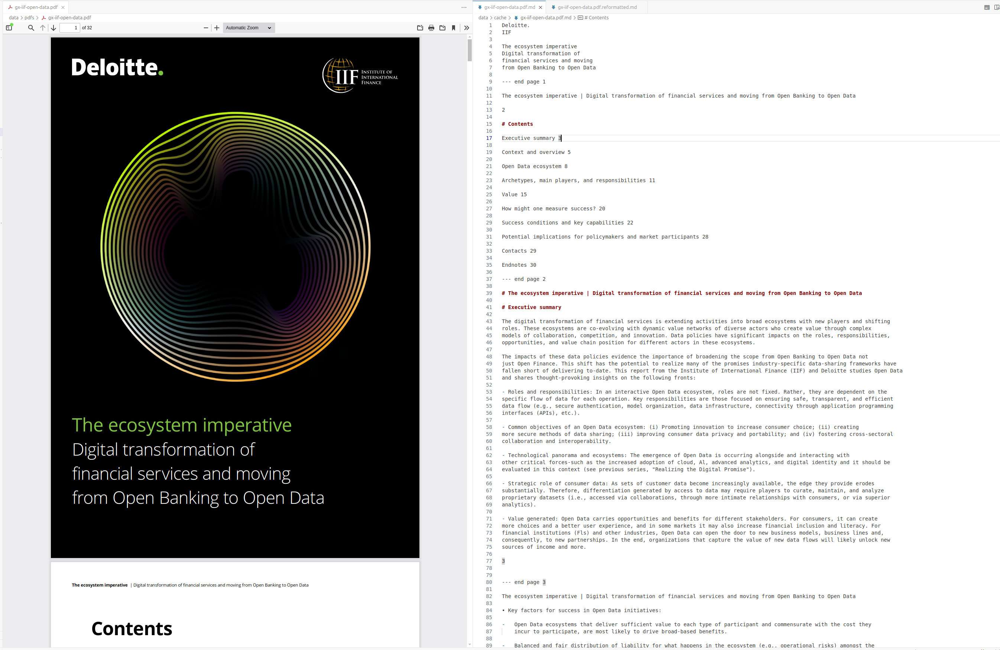
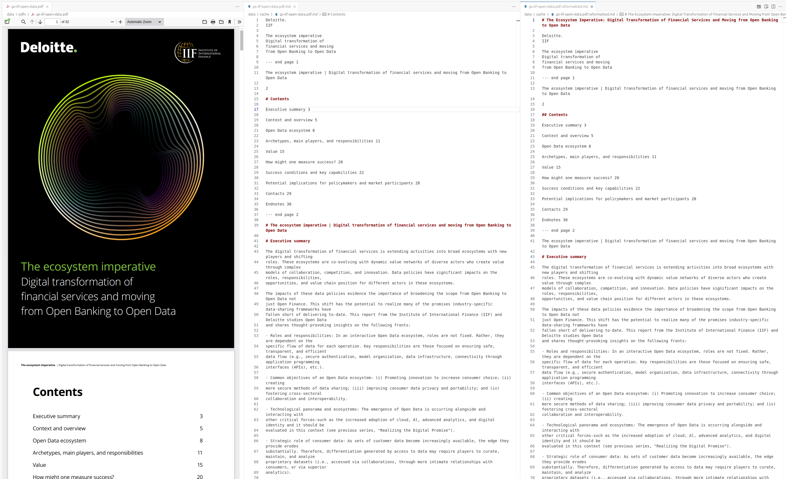
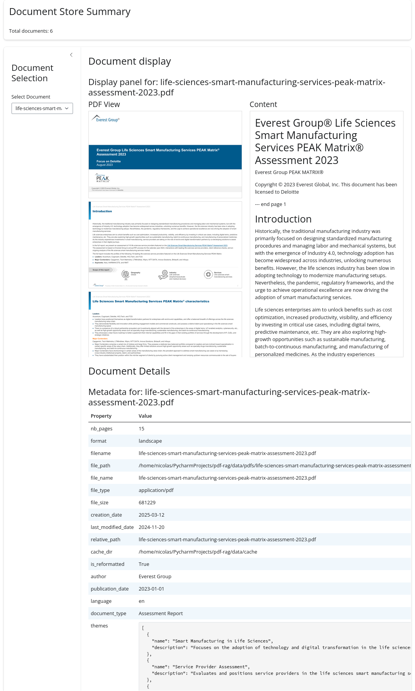
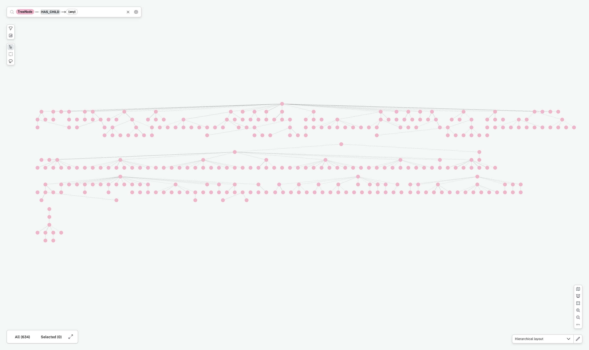

import os
from dataclasses import dataclass, field
from pathlib import Path
from omegaconf import OmegaConf, ValidationError
from pdf_rag.react_agent_multi_pdfs import ReActAgentMultiPdfs
from dotenv import load_dotenv
load_dotenv()
@dataclass
class ReActAgentConfig:
data_dir: Path | str
api_key_gemini: str | None = None
api_key_mistral: str | None = None
num_workers: int = 16
chunks_top_k: int = 5
nodes_top_k: int = 10
max_iterations: int = 20
verbose: bool = True
queries: list[str] = field(default_factory=list)
def __post_init__(self):
self.data_dir = Path(self.data_dir)
self.root_dir = self.data_dir / "pdfs"
self.pdfs_dir = self.data_dir / "pdfs"
self.cache_dir = self.data_dir / "cache"
self.storage_dir = self.data_dir / "storage_queries"
self.api_key_gemini = self.api_key_gemini or os.environ.get("GEMINI_API_KEY")
self.api_key_mistral = self.api_key_mistral or os.environ.get("MISTRAL_API_KEY")
if not self.api_key_gemini:
raise ValueError(
"Gemini API Key is required. Provide api_key_gemini or set GEMINI_API_KEY environment variable."
)
if not self.api_key_mistral:
raise ValueError(
"Mistral API Key is required. Provide api_key_mistral or set MISTRAL_API_KEY environment variable."
)
def load_and_validate_config(config_path: str) -> ReActAgentConfig:
try:
config = OmegaConf.load(config_path)
react_agent_schema = OmegaConf.structured(ReActAgentConfig)
react_agent_config = OmegaConf.merge(react_agent_schema, config)
react_agent_config = ReActAgentConfig(**react_agent_config)
print("Configuration loaded and validated successfully:")
return react_agent_config
except ValidationError as e:
raise ValidationError(f"Validation error: {e}")
except Exception as e:
raise Exception(f"Error loading configuration: {e}")In this blog post, we focus on RAG (Retrieval-Augmented Generation) specifically for PDF documents. We will study how PDFs can be processed for use with Language Models (LLMs). The code relies on llama-index package which is versatile but evolving rapidly and unstable.
PDFs are ubiquitous in businesses and throughout the human world. What’s remarkable is the sheer diversity of PDF types we encounter. These range from reports of just a few pages to documents spanning hundreds of pages, generally including a table of contents. We also frequently deal with slide decks, or presentations, which are common in corporate settings. These can vary from just a few slides to dozens or even hundreds, often with their own unique tables of contents and organizational structures.
It’s fascinating to consider how differently humans and computers process this information. Humans, when facing lengthy documents, generally tend to look at the table of contents and assess the document’s overall structure to identify areas of interest.
However, machines, especially with page-by-page parsing, often lose the document’s overall structure. One way to address this is to use embeddings and chunking, attempting to find similarities through embeddings or semantic similarity to identify potentially relevant chunks of information.
This highlights the core challenge of the method: the need to process data differently as a human than as a machine, particularly to gain a holistic view of the problem.
In Section 1, we delve into PDF metadata and structure extraction. We explore the challenges and limitations of raw conversion and the necessity of reformatting to improve document structure. We also discuss the parsing of document structure to create a hierarchical index for efficient document retrieval. In Section 2, we implement a multi-document PDF RAG system based on LlamaIndex, focusing on query-based document retrieval and generation.
Some important resources for this blog post include:
- pdf-rag GitHub Repo: Contains the complete code for the PDF metadata extraction and RAG system described in this post
- HF Space Demo for PDF Metadata: Interactive demo showcasing the metadata and structure extraction capabilities
- llama-index: Framework used for building the LLM application (note: actively evolving package with frequent updates)
All code paths referenced in this post are relative to the pdf-rag GitHub Repo.
PDF Metadata and Structure Extraction
The process of extracting textual content from PDF documents involves several key steps. First, we convert PDF to markdown format as detailed in Section 1.1. Then, we apply reformatting techniques to improve the document structure in Section 1.2. Metadata extraction in Section 1.3 focuses on capturing valuable information like author, date, and language. Finally, we parse the document structure to create a hierarchical index for efficient document retrieval in Section 1.4. The overall execution of these steps is managed by the ingestion pipeline detailed in Section 1.5. This systematic approach aims to create a more coherent and structured representation of the document content, through raw conversion, reformatting, and structural parsing.
PDF to Markdown Conversion
For PDF to Markdown conversion, we refer to the related blog post PDF parsing for LLM Input which describes different methods to parse PDFs for LLM input.
For RAG applications with PDFs, we’ll focus on using Vision Language Models (VLMs) for PDF-to-Markdown conversion. As discussed in the related blog post PDF parsing for LLM Input, VLMs offer a straightforward and effective solution. While the approach is more expensive than basic text extraction, it provides valuable capabilities like image description integration. Similar to LlamaParse but with more flexibility, our implementation allows:
- Full control over model selection
- Choice of different API providers
- End-to-end process management
The code implements a VLMPDFReader class (in src/pdf_rag/readers.py) that uses Vision Language Models (VLMs) to convert PDF documents to markdown format. Here’s how it works.
Key Features
- Uses both Gemini and Mistral models for processing.
- Supports both single PDFs and batch processing.
- Includes a caching mechanism to avoid reprocessing.
- Handles API rate limiting and retries.
- Processes PDFs page by page with parallel execution.
Architecture
The conversion process follows these steps:
- Initialization
- Sets up API clients for Gemini and Mistral.
- Validates API keys and cache directory.
- Loads conversion template.
- PDF Processing
- Loads PDF file using
PdfReader. - Processes each page individually.
- Converts PDF pages to images for VLM processing.
- Loads PDF file using
- VLM Processing Pipeline
- First attempts conversion with Gemini.
- Falls back to Mistral if Gemini returns “RECITATION”.
- Uses a template to guide the conversion.
- Output Generation
- Combines processed pages.
- Adds page markers for reference.
- Caches results to avoid reprocessing.
- Returns document with metadata.
Usage Example
reader = VLMPDFReader(
cache_dir="./cache",
api_key_gemini="your_gemini_key", # or use env var GEMINI_API_KEY
api_key_mistral="your_mistral_key" # or use env var MISTRAL_API_KEY
)
# Single file
doc = reader.load_data("path/to/document.pdf")
# Multiple files
docs = reader.load_data(["doc1.pdf", "doc2.pdf"])Why do we use Gemini and Mistral models ?
The “RECITATION” Error in Gemini API
The RECITATION error in the Gemini API occurs when the model detects that it is generating content that closely resembles its training data, particularly copyrighted material. This error is designed to prevent the model from reproducing protected content verbatim. The issue arises unpredictably and can halt content generation mid-stream, leading to incomplete responses.
In this case of failure, we fall back to the Mistral model to parse the problematic pdf page.
Overall, the RECITATION error is a significant challenge for developers using the Gemini API, highlighting the tension between content safety and usability
VLMPDFReader is designed to be robust and efficient, with built-in caching and parallel processing capabilities to handle large documents or multiple files efficiently.
Here is the associated template prompt for the VLM.
Click to view template
You are a specialized document transcription assistant converting PDF documents to Markdown format.
Your primary goal is to create an accurate, complete, and well-structured Markdown representation.
<instructions>
1. Language and Content:
- MAINTAIN the original document language throughout ALL content
- ALL elements (headings, tables, descriptions) must use source language
- Preserve language-specific formatting and punctuation
- Do NOT translate any content
2. Text Content:
- Convert all text to proper Markdown syntax
- Use appropriate heading levels (# ## ###)
- Preserve emphasis (bold, italic, underline)
- Convert bullet points to Markdown lists (-, *, +)
- Maintain original document structure and hierarchy
3. Visual Elements (CRITICAL):
a. Tables:
- MUST represent ALL data cells accurately in original language
- Use proper Markdown table syntax |---|
- Include header rows
- Add caption above table: [Table X: Description] in document language
b. Charts/Graphs:
- Create detailed tabular representation of ALL data points
- Include X/Y axis labels and units in original language
- List ALL data series names as written
- Add caption: [Graph X: Description] in document language
c. Images/Figures:
- Format as: 
- Describe key visual elements in original language
- Include measurements/scales if present
- Note any text or labels within images
4. Quality Requirements:
- NO content may be omitted
- Verify all numerical values are preserved
- Double-check table column/row counts match original
- Ensure all labels and legends are included
- Maintain document language consistently throughout
5. Structure Check:
- Begin each section with clear heading
- Use consistent list formatting
- Add blank lines between elements
- Preserve original content order
- Verify language consistency across sections
</instructions>
An example of raw conversion is shown in Figure 1.

We also have a PDFDirectoryReader class (in src/pdf_rag/readers.py) to provide batch processing capabilities for PDF files within a directory structure. It acts as a wrapper around the VLMPDFReader, adding directory handling and metadata extraction features.
Key Features
- Directory-based Processing: Handles both single PDF files and directories containing multiple PDFs
- Metadata Extraction: Automatically extracts and includes file metadata like:
- Creation date
- Last modified date
- File size
- File type
- Relative path information
- Configuration Management:
- Validates directory paths and creates cache directories
- Manages API keys for both Gemini and Mistral models
- Supports environment variable configuration
- Parallel Processing: Configurable number of workers for concurrent processing
Usage Example
reader = PDFDirectoryReader(
root_dir="./documents",
cache_dir="./cache",
num_workers=4,
show_progress=True
)
# Process single PDF file
docs = reader.load_data("documents/sample.pdf")
# Process directory of PDFs
docs = reader.load_data("documents/reports/")
# Async processing
docs = await reader.aload_data("documents/reports/")Difficulties and Drawbacks of Raw VLM Conversion
The raw conversion process has several limitations and drawbacks that can affect the quality and accuracy of the output. One of the main difficulties in PDF parsing is that it is generally done page by page, causing the loss of the overall document structure. We lose the appropriate headings that help retrieve the general structure of the document, and we end up with a very local and focused view. For example, when converting PDF to markdown, the heading structure specified by the markdown is generally incorrect - the headers and their levels don’t correspond to what is expected.
PDF Reformatting
The loss of document structure during raw conversion necessitates reformatting to improve the overall document organization and coherence. Reformatting involves restructuring the content to ensure proper hierarchy, headings, and formatting. This step is crucial for enhancing readability and navigation within the document. In practice, we use a Large Language Model (LLM) to reprocess the document chunk by chunk, given that some documents can be very long. The aim is to provide a more comprehensive overview. We’re using Gemini, which has a very large context, which makes this approach quite helpful. We are observing an improvement in the markdown formatting, particularly with better title identification. It’s not always perfect, but there’s a more effective segmentation based on titles and markdown, resulting in better adherence to the overall document structure compared to what we had before. This makes it easier to have a structure a bit more coherent when you cut through markdowns, especially in reports.
The ReformatMarkdownComponent class (in src/pdf_rag/transforms.py) reformats markdown content using the Gemini API. Here’s a detailed breakdown of its functionalities:
- Configuration Options
max_iters: Maximum iterations for reformatting (default: 50)in_place: Whether to modify nodes directly or create copies (default: True)num_workers: Number of concurrent workers (default: 4)show_progress: Display progress during processing (default: True)
- Caching Mechanism
- Stores reformatted content in
.reformatted.mdfiles - Avoids reprocessing previously reformatted content
- Uses file path and cache directory from node metadata
- Stores reformatted content in
- Processing Pipeline
- Handles individual nodes asynchronously
- Uses Jinja2 templates for content reformatting
- Supports both landscape and portrait formats
- Accumulates reformatted content iteratively
Usage Example
component = ReformatMarkdownComponent(
api_key="your_gemini_key", # or use env var GEMINI_API_KEY
num_workers=4,
show_progress=True
)
# Process nodes
processed_nodes = component(nodes)
# Async processing
processed_nodes = await component.acall(nodes)The component is designed to improve document structure through:
- Heading Hierarchies: Ensures proper nesting and levels (H1 -> H2 -> H3)
- Consistent Formatting: Standardizes markdown syntax, lists, and spacing
- Content Preservation: Maintains original language, technical details, and metadata
- Format Handling: Supports both portrait (reports) and landscape (presentations) layouts
- Quality Checks: Validates completeness and structure accuracy
Here is the associated template prompt for Gemini.
Click to view template prompt for Gemini
<document>
{{ document }}
</document>
{% if processed %}
<processed>
{{ processed }}
</processed>
{% endif %}
You are a professional technical documentation editor specializing in markdown documents.
Your task is to transform the document into a well-structured markdown document with clear hierarchy and organization.
<instructions>
1. Content Preservation (CRITICAL):
- PRESERVE ALL original content without exception
- Do not summarize or condense any information
- Maintain all technical details, examples, and code snippets
- Keep all original links, references, and citations
- Preserve all numerical data and specifications
{% if landscape %}
- Preserve `---end page ...` markers
{% endif %}
2. Document Structure:
- Ensure exactly one H1 (#) title at the start
- Use maximum 3 levels of headers (H1 -> H2 -> H3)
- Avoid excessive nesting - prefer flatter structure
- Group related sections under appropriate headers
- If an existing TOC is present, maintain and update it
- Only create new TOC if none exists
3. Formatting Standards:
- Use consistent bullet points/numbering
- Format code blocks with appropriate language tags
- Properly format links and references
- Use tables where data is tabular
- Include blank lines between sections
4. Quality Checks:
- Compare final document with original for completeness
- Verify all technical information is preserved
- Ensure all examples remain intact
- Maintain all nuances and specific details
5. Metadata & Front Matter:
- Include creation/update dates if present
- Preserve author information
- Maintain any existing tags/categories
</instructions>
{% if processed %}
Please continue reformatting from where it was left off, maintaining consistency with the processed portion.
Ensure NO content is omitted - preserve everything from the original document.
All sections should seamlessly integrate with the existing structure.
End your response with <end>.
{% else %}
Provide the complete reformatted document following the above guidelines.
WARNING: Do not omit ANY content - preserve everything from the original document.
Ensure all sections are properly nested and formatted.
End your response with <end>.
{% endif %}
PDFs can be either portrait-formatted reports or landscape-formatted slides. In both cases, the PDF is processed page by page, resulting in the loss of the overall document structure. However, the processing approach needs to differ depending on whether we’re dealing with slides or reports.
For slides (landscape format):
- Have a clear page-by-page structure
- Each slide is a discrete unit
- Page markers are essential for maintaining structure
For reports (portrait format):
- Do not rely on page breaks
- Have a clear heading hierarchy
- Structure comes from nested headers
Note that the template prompt has a conditional part based on format:
{% if landscape %}
- Preserve `---end page ...` markers
{% endif %}An example of Markdown reformatting is shown in Figure 2.

PDF Metadata Extraction
Once we’ve converted and reformatted the PDF content into markdown format using Vision Language Models (VLMs), the next step is extracting valuable metadata from the documents. This section explores a series of specialized extractors built on the LlamaIndex framework, each designed to capture specific aspects of PDF documents:
- Document context (author, date, language)
- Table of contents (both extraction and creation)
- Page structure (especially for presentations)
- Document hierarchy and relationships
These extractors work together to create a comprehensive metadata layer that enhances document searchability and understanding.
All the extractors are defined in the file src/pdf_rag/extractors.py. Note that as experienced with reformatting markdown in Section 1.2, landscape-based vs portrait-based PDFs require different processing approaches. The extractors are designed to handle these differences effectively.
The GeminiBaseExtractor serves as the foundation for all extractors, providing:
- Gemini API integration with configurable temperature and model selection
- API key validation and management
- Abstract interface for extraction operations
- Parallel processing capabilities
1. ContextExtractor
Extracts contextual information from documents:
- Processes document content using a specialized template
- Returns structured JSON with document context
- Handles parallel processing of multiple nodes
Click to view template prompt for Gemini
<document>
{{ document }}
</document>
Please analyze the above document and provide output in the following JSON format:
{
"author": "detected_author",
"publication_date": "YYYY-MM-DD",
"language": "detected_language in ISO 639-1 language code format",
"document_type": "type_if_identifiable"
"themes": [
{
"name": "Theme name",
"description": "Brief explanation"
}
],
"entities": [
{
"name": "Entity name",
"role": "Role/significance"
}
],
"time_periods": [
{
"start_date": "YYYY-MM-DD",
"end_date": "YYYY-MM-DD",
"period_description": "Description of events/developments in this timeframe",
"is_approximate": boolean,
}
],
"keywords": [
"keyword1",
"keyword2"
],
"summary": "Concise summary text focusing on main points"
}
Note: Keep descriptions concise and factual.
If an item is missing, answer with "".
Answer in the language of the document.
2. TableOfContentsExtractor
Extracts existing tables of contents from documents:
- Focuses on the first 10 pages by default
- Supports both portrait and landscape formats
- Returns an empty string if no TOC is found
- Uses a templated approach for extraction
Click to view template prompt for Gemini
<doc>
{{ doc }}
</doc>
{% if format == 'landscape' %}
Extract the table of contents (TOC) from the document if present and specify the page number where the table of contents is located.
The table of contents, if it exists, is located on a single page.
Note that each page in the document ends with a marker '--- end page n' where n is the page number.
Output format:
- If a table of contents exists:
First line: "Table of contents found on page X"
Following lines: Complete TOC with its original structure and hierarchy
- If no table of contents exists: Respond with exactly "<none>"
{% else %}
Extract the table of contents (TOC) from the document if it exists.
IMPORTANT: the table of contents must be contained in consecutive lines in the source document itself.
Output format:
- If a table of contents exists: complete TOC with its original structure and hierarchy
- If no table of contents exists: Respond with exactly "<none>"
{% endif %}
3. TableOfContentsCreator
Creates new tables of contents:
- Portrait Mode:
- Analyzes markdown headers
- Includes line numbers for reference
- Requires reformatted content
- Landscape Mode:
- Generates TOC using Gemini
- Includes a validation step
- Two-phase process: draft and check
Click to view draft template prompt for Gemini
<doc>
{{ doc }}
</doc>
Generate a hierarchical table of contents for the slides deck above by:
1. IDENTIFY SECTION BREAKS
- Section breaks are marked by "--- end page {n}" where n is the page number
2. EXTRACT SECTION INFO
- Get the title text from each section break page
- Record the corresponding page number
- Validate that page numbers are unique and ascending
3. FORMAT OUTPUT
Format each entry as:
# {Section Title} (Page {n})
Example output:
# Introduction (Page 1)
# Key Concepts (Page 5)
# Implementation (Page 12)
Requirements:
- Page numbers must be unique and sequential
- Ignore any formatting in the section titles
The TOC should help readers quickly navigate the main sections of the deck.
Click to view check template prompt for Gemini
<toc>
{{ toc }}
</toc>
Generate a standardized table of contents following these rules:
1. FORMAT REQUIREMENTS
- Each entry: "# {Title} (Page {n})"
- Page numbers must be integers in parentheses
- One entry per line, no blank lines
- Preserve original markdown formatting in titles
- Page numbers ascending order
2. VALIDATION
- Reject duplicate page numbers
- Reject duplicate titles
- Page numbers must exist and be > 0
- Title cannot be empty
Example valid output:
# Executive Summary (Page 1)
# Market Analysis (Page 3)
# Financial Projections (Page 7)
4. LandscapePagesExtractor
Specialized for landscape (presentation) documents:
- Requires an existing TOC (extracted or created)
- Processes document content page by page
- Uses template-based extraction
- Returns structured page information
Click to view template prompt for Gemini
<doc>
{{ doc }}
</doc>
<toc>
{{ toc }}
</toc>
Extract and list all pages from the slides deck in <doc>, using the table of contents in <toc> as reference.
Rules:
1. Format each line exactly as: Page N : [title]
2. List pages in ascending numerical order (1, 2, 3...)
3. When a page has no title, use the title from its preceding page
4. Include all pages, even those without content
Example:
Page 1 : Introduction
Page 2 : Market Analysis
Page 3 : Market Analysis
Page 4 : Key Findings
5. StructureExtractor
Handles document structure analysis:
- Portrait Mode:
- Uses the created TOC for structure
- Simple structure representation
- Landscape Mode:
- Combines TOC and page information
- Creates a comprehensive structure
- Requires both TOC and page metadata
Click to view template prompt for Gemini
<toc>
{{ toc }}
</toc>
<pages>
{{ pages }}
</pages>
Analyze the table of contents (TOC) in <toc> and the pages of the slides deck provided in <pages>.
Group the pages under their corresponding TOC sections using this format:
# [TOC Section]
- Page X : [Full Page Title]
- Page Y : [Full Page Title]
Rules:
- Each TOC section should have an appropriate level heading with #, ##, or ###.
- List all pages that belong under each section
- Maintain original page numbers and full titles
- Include pages even if their titles are slightly different from TOC entries
- Group subsections under their main section
- List pages in numerical order within each section
- Don't omit any pages
- If a page doesn't clearly fit under a TOC section, place it under "Other Pages"
Example:
# Introduction
- Page 1 : Welcome Slide
- Page 2 : Project Overview
# Key Findings
- Page 3 : Financial Results
- Page 4 : Market Analysis
Usage Example
# Initialize extractor
extractor = TableOfContentsExtractor(
api_key="your_gemini_key", # or use env var GEMINI_API_KEY
head_pages=10,
temperature=0.1
)
# Process nodes
results = await extractor.aextract(nodes)Each extractor is designed to work asynchronously and handle batch processing efficiently, with built-in error handling and progress reporting.
To visualize the metadata and structure of processed documents, you can:
Run the ingestion pipeline using the script in
src/scripts/metadata_structure.py(detailed in Section 1.5)View the results in the Python Shiny app at
src/app/app-metadata.py
A live demo is available on the HF Space Demo for PDF Metadata. The visualization interface is shown in Figure 3.

Parsing Structure
In this section, we focus on parsing the structure of extracted metadata to create a hierarchical index for efficient document retrieval. We distinguish between portrait (report) and landscape (presentation) structures and describe the benefits of each.
Parsing Structures from Extracted Metadata
At the end of the extraction, we have two types of parsed structure. The portrait (report) structure and the landscape (presentation) structure. We will describe the differences between the two and their benefits.
Portrait (Report) Structure
- Hierarchical Headers: Uses markdown heading levels (#, ##, ###, ####) to represent document hierarchy
- Line Numbers: Each heading includes line numbers
[line X]for precise content location - Linear Flow: Follows a traditional document structure with nested sections
- Content Focus: Emphasizes content hierarchy and relationships
- Example Use Case: Technical reports, research papers, documentation
# Deloitte. [line 0]
## Pushing through undercurrents [line 2]
### Technology's impact on systemic risk: A look at banking [line 3]
### Risk 1: Risk exposure from Banking as a Service offerings [line 15]
#### Table 1: Risk exposure from Banking as a Service offerings [line 29]
### Risk 2: Inadequate stability mechanisms for stablecoin arrangements [line 38]
#### Table 1: Information about forces that could amplify the risk and how the industry mitigate it? [line 52]
### Contacts [line 63]Landscape (Presentation) Structure
- Page-Based Organization: Groups content by pages under main sections
- Explicit Page Numbers: Each entry shows “Page X : Title” format
- Flat Section Hierarchy: Uses mainly top-level headings (#) for major sections
- Sequential Listing: Lists pages sequentially within each section
- Example Use Case: Slide decks, presentations, visual-heavy documents
# Everest Group® Life Sciences Smart Manufacturing Services PEAK Matrix® Assessment 2023
- Page 1 : Everest Group® Life Sciences Smart Manufacturing Services PEAK Matrix® Assessment 2023
# Introduction
- Page 2 : Introduction
# Life Sciences Smart Manufacturing Services PEAK Matrix® Assessment 2023
- Page 3 : Life Sciences Smart Manufacturing Services PEAK Matrix® Assessment 2023
- Page 4 : Life Sciences Smart Manufacturing Services PEAK Matrix® Assessment 2023
- Page 12 : Life Sciences Smart Manufacturing Services PEAK Matrix® Assessment 2023
- Page 13 : Life Sciences Smart Manufacturing Services PEAK Matrix® Assessment 2023
# Deloitte profile
- Page 5 : Deloitte profile (page 1 of 6)
- Page 6 : Deloitte profile (page 2 of 6)
- Page 7 : Deloitte profile (page 3 of 6)
- Page 8 : Deloitte profile (page 4 of 6)
- Page 9 : Deloitte profile (page 5 of 6)
- Page 10 : Deloitte profile (page 6 of 6)
# Appendix
- Page 11 : Appendix
# FAQs
- Page 14 : FAQs
# Everest Group®
- Page 15 : Everest Group®Benefits
- Document Navigation
- Portrait: Quick access to specific content sections via line numbers
- Landscape: Easy location of specific slides via page numbers
- Content Retrieval
- Portrait: Granular access to nested content hierarchies
- Landscape: Efficient slide/page-based content lookup
- Structure Preservation
- Portrait: Maintains detailed document hierarchy and relationships
- Landscape: Preserves presentation flow and slide organization
We then use distinct parsers to process these structures into formal tree representations. Here’s a detailed description of both parsing functions. The function parse_portrait_structure (in src/pdf_rag/structure_parsers.py) parses the structure of portrait-formatted documents (like reports) and creates a tree representation.
- Takes a
BaseNodedocument as input - Creates a hierarchical tree structure based on document headers
- Headers must follow format:
#{level} {title} [line {number}] - Validates line numbers are in ascending order
- Returns a
TreeNoderepresenting the document structure
The function parse_landscape_structure (in src/pdf_rag/structure_parsers.py) parses the structure of landscape-formatted documents (like presentations) and creates a tree representation.
- Takes a
BaseNodedocument as input - Handles both section headers and page entries
- Creates a hierarchical structure with page numbers
- Tracks missing or duplicate pages
- Creates an “Uncategorized” section for orphaned pages
Both functions return a TreeNode object that can be traversed using breadth-first search (bfs) and supports standard tree operations like adding/removing children and setting parents.
Here are the parsed structures for both document formats, shown in Listing 3 and Listing 4, which correspond to the raw structures in Listing 2 and Listing 1 respectively. These visualizations are also available in the HF Space Demo for PDF Metadata.
Indentation shows parent/child relationships For landscape-oriented content, Numbers in [] represent:
- Positive numbers: page numbers
- Negative numbers: abstract nodes grouping related sections
life-sciences-smart-manufacturing-services-peak-matrix-assessment-2023 [-1]
Everest Group® Life Sciences Smart Manufacturing Services PEAK Matrix® Assessment 2023 [-2]
Everest Group® Life Sciences Smart Manufacturing Services PEAK Matrix® Assessment 2023 [1]
Introduction [-3]
Introduction [2]
Life Sciences Smart Manufacturing Services PEAK Matrix® Assessment 2023 [-4]
Life Sciences Smart Manufacturing Services PEAK Matrix® Assessment 2023 [3]
Life Sciences Smart Manufacturing Services PEAK Matrix® Assessment 2023 [4]
Life Sciences Smart Manufacturing Services PEAK Matrix® Assessment 2023 [12]
Life Sciences Smart Manufacturing Services PEAK Matrix® Assessment 2023 [13]
Deloitte profile [-5]
Deloitte profile (page 1 of 6) [5]
Deloitte profile (page 2 of 6) [6]
Deloitte profile (page 3 of 6) [7]
Deloitte profile (page 4 of 6) [8]
Deloitte profile (page 5 of 6) [9]
Deloitte profile (page 6 of 6) [10]
Appendix [-6]
Appendix [11]
FAQs [-7]
FAQs [14]
Everest Group® [-8]
Everest Group® [15]For portrait-oriented content, Numbers in [] represent:
- Positive numbers: line numbers
- Negative numbers: abstract nodes grouping related sections
deloitte-tech-risk-sector-banking [-1]
Deloitte. [0]
Pushing through undercurrents [2]
Technology's impact on systemic risk: A look at banking [3]
Risk 1: Risk exposure from Banking as a Service offerings [15]
Table 1: Risk exposure from Banking as a Service offerings [29]
Risk 2: Inadequate stability mechanisms for stablecoin arrangements [38]
Table 1: Information about forces that could amplify the risk and how the industry mitigate it? [52]
Contacts [63]Tree Index
Given these parsed structures, we now have access to a structured representation of the document content, divided by line numbers (portrait) or page numbers (landscape). The next step is to create a hierarchical index of the processed documents to support efficient traversal and querying. We need several components to build this index. First, we need two types of node parsing
MarkdownLineNodeParser: For portrait-oriented content,MarkdownPageNodeParser: For landscape-oriented content
Here’s a description of the two Markdown node parser classes.
MarkdownLineNodeParser
- Parses portrait-oriented documents (like reports) by splitting on headers
- Tracks header hierarchy and line numbers
- Preserves code blocks by avoiding header parsing within them
- Builds text nodes with header path and line number metadata
- Used for documents where structure comes from markdown headers
MarkdownPageNodeParser
- Parses landscape-oriented documents (like presentations) by splitting on page markers
- Splits on
--- end page Nmarkers - Optionally chunks content using a sentence splitter
- Builds text nodes with page number metadata
- Used for documents with clear page-based structure like slide decks
The key difference is that MarkdownLineNodeParser focuses on header-based structure while MarkdownPageNodeParser focuses on page-based structure, matching the different needs of reports versus presentations.
Using these parsers, we obtain document nodes that can be integrated into a hierarchical index. The TreeIndex class, located in src/pdf_rag/tree_index.py, extends BaseIndex to offer a hierarchical tree-based indexing structure for document nodes. It is specifically designed to manage both portrait (reports) and landscape (presentations) formatted documents. The TreeIndex class leverages the LlamaIndex framework, which provides a flexible and extensible indexing system for document nodes. Please note that this class is a work in progress; we have provided an initial draft of TreeIndex, but it is not yet fully implemented and should not be used in its current state.
The key features of the TreeIndex class (in src/pdf_rag/tree_index.py) include:
- Data Structure
- Uses
IndexStructTreeto maintain hierarchical relationships - Stores nodes in a tree structure with parent-child relationships
- Supports both root-level and nested nodes
- Maintains bidirectional references (parent-to-children and child-to-parent)
- Node Management
- Node insertion with automatic relationship building
- Node deletion with relationship cleanup
- Reference document tracking
- Support for abstract nodes (section headers) and content nodes (pages)
- Neo4j Integration
- Export functionality to Neo4j graph database
- Creates nodes and relationships in Neo4j
- Maintains document structure and metadata
- Supports constraints and cleanup operations
Usage Example
# Create index with nodes
index = TreeIndex(
nodes=document_nodes,
show_progress=True
)
# Export to Neo4j
config = Neo4jConfig(
uri="neo4j://localhost:7687",
username="neo4j",
password="password",
database="neo4j"
)
index.export_to_neo4j(config=config)For now, we provide a basic implementation of the TreeIndex class to demonstrate the concept of hierarchical indexing. A visual representation of the index is shown in Figure 4.

Script and Ingestion Pipeline
The script src/scripts/metadata_structure.py executes all the extractors in sequence through an ingestion pipeline. This process enriches documents with comprehensive metadata including author information, document context, table of contents, and structural relationships. The resulting metadata provides a rich foundation for document analysis and retrieval. It stores the processed data in both a local storage and optionally in a Neo4j database.
To execute the script, you need to provide a configuration file in YAML format. An example configuration file is provided in configs/metadata_structure_example.yaml. The configuration file includes settings for the pipeline, API keys, and file paths. The script supports three main modes:
ingest: Runs only the ingestion pipelinetree: Creates the tree indexall: Runs both ingestion and indexing
The pipeline first ingests the PDF documents using PDFDirectoryReader to read PDF files. Then it processes the documents through the ingestion pipeline, which includes several transformations:
ReformatMarkdownComponent: Reformats content to markdownContextExtractor: Extracts contextual informationTableOfContentsExtractor: Extracts table of contentsTableOfContentsCreator: Creates structured TOCLandscapePagesExtractor: Handles landscape-oriented pagesStructureExtractor: Extracts document structure
It stores the results in a SimpleDocumentStore for persistence and loading of processed data. Then, the script creates a hierarchical index of the processed documents using the TreeIndex class. The index is stored in a local directory and optionally exported to a Neo4j database.
Usage
python scripts/metadata_structure.py --config path/to/config.yamlThis script is particularly useful to process large collections of PDF documents and create searchable, structured knowledge bases from them. A Shiny app is provided to visualize and explore the metadata and structure of processed documents. The app allows you to:
- Browse processed documents and their metadata
- View extracted table of contents
- Explore document structure trees
- Compare raw and reformatted markdown content
- Visualize document hierarchies
You can run the app locally using:
python src/app/app-metadata.pyA live demo showcasing these capabilities is available on the HF Space Demo for PDF Metadata. The visualization interface, shown in Figure 3, provides an interactive way to explore document metadata and structure.
PDF RAG: Multi-Document Query System
In this section, we describe a simple multi-document PDF RAG (Retrieval Augmented Generation) system using LlamaIndex. The system processes multiple PDF documents, creates specialized agents per document, and combines them into a top-level agent for cross-document queries. The system is designed to facilitate:
- Document comparison tasks
- Cross-document information retrieval
- Summarization across multiple documents
- Fact-checking across document sets
Note that the system operates independently of the metadata and structure extracted from PDF documents in Section 1, as the TreeIndex described in Section 1.4.2 is not yet fully implemented. The code in src/pdf_rag/react_agent_multi_pdfs.py is adapted from the Multi-Document Agents LlamaIndex Notebook.
Description
The code src/pdf_rag/react_agent_multi_pdfs.py implements a ReActAgentMultiPdfs class designed for querying information from multiple PDF documents using a ReAct agent approach. The core idea is to build an agent for each PDF document, and then a “top-level” agent orchestrates the use of these individual agents to answer complex queries. It leverages LlamaIndex for indexing, querying, and agent creation, and uses Gemini for LLM and embeddings. It includes both synchronous and asynchronous methods for building agents and processing queries to utilize concurrency.
Class Definition:
class ReActAgentMultiPdfs:
def __init__(
self,
api_key_gemini: str,
api_key_mistral: str,
root_dir: Path,
pdfs_dir: Path,
cache_dir: Path,
storage_dir: Path,
num_workers: int = 16,
chunks_top_k: int = 5,
nodes_top_k: int = 10,
max_iterations: int = 20,
verbose: bool = True,
) -> None:
# ... initialization logic ...The ReActAgentMultiPdfs class is initialized with several parameters:
api_key_gemini: API key for the Google Gemini model.api_key_mistral: API key for the Mistral AI model.root_dir: The root directory of the project.pdfs_dir: The directory containing the PDF files to process.cache_dir: The directory to store cached data.storage_dir: The directory to store the persisted indexes.num_workers: Number of workers to use for parallel processing.chunks_top_k: Number of top chunks to retrieve from the vector index for each document.nodes_top_k: Number of top nodes to retrieve from the object index.max_iterations: Maximum number of iterations for the ReAct agent.verbose: Whether to print verbose output.
The constructor initializes various components including:
PDFDirectoryReader: Used to load data from PDF files.MarkdownPageNodeParser: Used to parse documents into nodes.
Key Methods:
_get_vector_summary_paths(self, pdf_file: Path) -> tuple[str, Path, Path, Path]:- This helper function takes a
pdf_filepath and returns paths for storing the vector index, summary index, and summary text file, respectively. - It ensures that the paths are unique based on the PDF filename and are stored within the specified
storage_dir. - Critically it cleans the filenames, replacing spaces and parentheses with underscores, which is essential to avoid issues with LLM tool parsing.
- This helper function takes a
build_agent_per_doc(self, pdf_file: Path) -> tuple[ReActAgent, str]:- This method is the heart of the per-document agent creation process.
- It takes a
pdf_filepath as input. - It first checks if the vector and summary indexes already exist at the paths defined by
_get_vector_summary_paths. If they do, it loads them from disk; otherwise, it creates them. - Index Creation: Loads the PDF data using
self._pdf_reader, parses it into nodes usingself._markdown_parser, and then builds both aVectorStoreIndex(for semantic search) and aSummaryIndex(for generating summaries). These are persisted to disk usingstorage_context.persist. - Query Engine Creation: Creates two query engines:
vector_query_engineusing the vector index andsummary_query_engineusing the summary index. Thevector_query_engineusesFullPagePostprocessorto retrieve the full page for context. - Summary Extraction: Extracts a summary of the document using the
summary_query_engineand stores it in a text file. - Tool Definition: Defines two
QueryEngineTools: one for the vector query engine and one for the summary query engine. These tools are used by the ReAct agent to answer questions. Each tool has a descriptive name and description that informs the agent when to use it. - Agent Creation: Creates a
ReActAgentfrom the defined tools and a system prompt that instructs the agent on how to use the tools. The system prompt emphasizes the need to use the tools and avoid relying on prior knowledge. - Returns the created
ReActAgentand the document summary.
abuild_agent_per_doc(self, pdf_file: Path) -> tuple[ReActAgent, str]:- This is the asynchronous version of
build_agent_per_doc. - It uses
asyncandawaitkeywords to perform asynchronous operations, particularly when loading data usingself._pdf_reader.aload_dataand querying the summary engine. - The rest of the logic is very similar to the synchronous version.
- This is the asynchronous version of
build_agents(self) -> tuple[dict[str, ReActAgent], dict[str, dict]]:- This method iterates through all PDF files in the
self._pdfs_dirdirectory. - For each PDF file, it calls
self.build_agent_per_docto create an agent and extract a summary. - It stores the agents in a dictionary
agents_dictand the summaries in a dictionaryextra_info_dict. - Returns the dictionaries of agents and extra information.
- This method iterates through all PDF files in the
abuild_agents(self) -> tuple[dict[str, ReActAgent], dict[str, dict]]:- This is the asynchronous version of
build_agents. - It uses
asyncio.gather(viarun_jobsfrom LlamaIndex) to build the agents concurrently, improving performance. - The logic is otherwise similar to the synchronous version.
- This is the asynchronous version of
top_agent(self) -> ReActAgent:- This method creates the “top-level” ReAct agent that orchestrates the use of the per-document agents.
- It first calls
self.build_agentsto create the per-document agents. - It then iterates through the agents and creates a
QueryEngineToolfor each agent, using the document summary as the tool description. - Object Index: Creates an
ObjectIndexfrom theQueryEngineTools, and then aVectorStoreIndexon these objects (tools). - Custom Object Retriever: Creates a
CustomObjectRetrieverthat wraps the vector store retriever from the object index. ThisCustomObjectRetrieveris critical: it adds a query planning tool to the retrieval process. This query planning tool is aSubQuestionQueryEnginewhich is specifically designed for comparing multiple documents. - Top Agent Creation: Creates the
ReActAgentusing theCustomObjectRetrieveras thetool_retriever. The system prompt instructs the agent to always use the tools provided. - It is decorated with
@cached_propertyso it’s only built once.
abuild_top_agent(self) -> ReActAgent:- This is the asynchronous version of
top_agent. - It uses
await self.abuild_agents()to build the agents asynchronously. - The rest of the logic is similar to the synchronous version.
- This is the asynchronous version of
process_queries(self, queries: list[str]) -> list[Any]:- Processes a list of queries using the synchronous
top_agent.
- Processes a list of queries using the synchronous
aprocess_queries(self, queries: list[str]) -> list[Any]:- Processes a list of queries using the asynchronous
top_agent.
- Processes a list of queries using the asynchronous
Custom Object Retriever (CustomObjectRetriever)
The CustomObjectRetriever class inherits from ObjectRetriever and overrides the retrieve method. The important modification here is the addition of a SubQuestionQueryEngine as a tool. This tool is specifically designed for comparison queries across multiple documents.
Here’s a breakdown of the critical part of CustomObjectRetriever.retrieve:
sub_question_engine = SubQuestionQueryEngine.from_defaults(
query_engine_tools=tools,
llm=self._llm,
question_gen=LLMQuestionGenerator.from_defaults(llm=self._llm),
)
sub_question_description = f"""
Useful for any queries that involve comparing multiple documents. ALWAYS use this tool for comparison queries - make sure to call this
tool with the original query. Do NOT use the other tools for any queries involving multiple documents.
"""
sub_question_tool = QueryEngineTool(
query_engine=sub_question_engine,
metadata=ToolMetadata(name="compare_tool", description=sub_question_description),
)
retrieved_tools = tools + [sub_question_tool]
return retrieved_tools- A
SubQuestionQueryEngineis created, using all the per-documenttools. TheLLMQuestionGeneratorhelps break down complex questions into sub-questions that can be answered by the individual tools. - A
QueryEngineToolis created for theSubQuestionQueryEngine, with a description emphasizing its use for comparison queries. - This
sub_question_toolis added to the list of retrieved tools.
Key Concepts:
- ReAct Agent: A type of agent that interleaves reasoning and acting. It uses a language model to generate thoughts, actions, and observations.
- Vector Store Index: An index that stores vector embeddings of text data. This allows for efficient semantic search.
- Summary Index: An index that stores summaries of text data. This allows for efficient summarization of documents.
- Query Engine: A component that allows you to query an index.
- QueryEngineTool: A tool that allows an agent to query a query engine.
- ObjectIndex: An index that stores objects (in this case, QueryEngineTools).
- ObjectRetriever: A component that allows you to retrieve objects from an object index.
- SubQuestionQueryEngine: A query engine that breaks down complex questions into sub-questions and answers them using a set of tools. It excels at comparison queries.
- Gemini: The LLM and embedding model used for this agent.
Overall Functionality:
The ReActAgentMultiPdfs class provides a system for answering complex questions based on multiple PDF documents. It works by creating an agent for each document and then creating a top-level agent that can orchestrate the use of these individual agents. The CustomObjectRetriever plays a crucial role in enabling the top-level agent to handle comparison queries by including a sub-question query engine as a tool. The asynchronous methods offer a way to speed up processing when dealing with many documents. This architecture allows the system to answer questions that require information from multiple documents, such as “What are the key differences between document A and document B?”
Example Usage
We provide an example usage in the notebook notebooks/query_multi_pdfs_example.ipynb. The notebook demonstrates how to use the ReActAgentMultiPdfs class to process multiple PDF documents and answer queries across them. It includes:
- Setting up the ReActAgent with multiple PDF documents
- Processing queries about documents
- Analyzing the agent’s reasoning process and tool selection
The complete example code and sample outputs are shown below, and the full notebook is available at ReActAgent: Querying Multiple PDFs Example.
Let’s analyze the output of the ReAct Agent for a specific query: What are the vulnerabilities introduced by relying on application programming interfaces (APIs) in Banking as a Service (BaaS)?
> Running step 0dc45634-70c7-4656-9b12-fc2b086848ce. Step input: What are the vulnerabilities introduced by relying on application programming interfaces (APIs) in Banking as a Service (BaaS)?
Thought: The current language of the user is: English. I need to use a tool to help me answer the question.
Action: tool_deloitte-tech-risk-sector-banking
Action Input: {'input': 'vulnerabilities of APIs in Banking as a Service (BaaS)'}
> Running step b574597e-591e-42f5-b2fe-075603369f1c. Step input: vulnerabilities of APIs in Banking as a Service (BaaS)
Thought: The current language of the user is: English. I need to use a tool to help me answer the question.
Action: vector_tool_deloitte-tech-risk-sector-banking
Action Input: {'input': 'API vulnerabilities in Banking as a Service (BaaS)'}
Observation: BaaS increasingly relies on application programming interfaces, introducing vulnerabilities that can pose risks for banks, such as customers' sensitive data and funds being at risk from phishing and social engineering attacks, flawed APIs providing a back door for hackers to penetrate banks' systems and noncompliance with data privacy rules by BaaS providers exposing partner banks to reputational risks.
> Running step ab6397c0-d075-499f-8d74-ce5ef25de495. Step input: None
Thought: I can answer without using any more tools. I'll use the user's language to answer
Answer: Banking as a Service (BaaS) relies heavily on APIs, which introduces vulnerabilities. These vulnerabilities can lead to risks for banks, including customer data and funds being at risk from phishing and social engineering, flawed APIs providing a backdoor for hackers, and noncompliance with data privacy rules by BaaS providers exposing partner banks to reputational risks.
Observation: Banking as a Service (BaaS) relies heavily on APIs, which introduces vulnerabilities. These vulnerabilities can lead to risks for banks, including customer data and funds being at risk from phishing and social engineering, flawed APIs providing a backdoor for hackers, and noncompliance with data privacy rules by BaaS providers exposing partner banks to reputational risks.
> Running step 8b2c762a-4a21-47ad-81f9-5dba4bb5e0f3. Step input: None
Thought: I can answer without using any more tools. I'll use the user's language to answer
Answer: Relying on application programming interfaces (APIs) in Banking as a Service (BaaS) introduces vulnerabilities that can put customer data and funds at risk from phishing and social engineering. Flawed APIs can also provide a backdoor for hackers. Furthermore, noncompliance with data privacy rules by BaaS providers can expose partner banks to reputational risks.Here’s a step-by-step explanation:
What are the vulnerabilities introduced by relying on application programming interfaces (APIs) in Banking as a Service (BaaS)?
Initial Thought: The agent recognizes the need for a tool to answer the question.
Action (tool selection): The agent selects the
tool_deloitte-tech-risk-sector-banking. This indicates that the agent has identified the appropriate source document for answering the question. It has arrived at this decision by retrieving tools based on the tools metadata.Action Input: The agent provides
{'input': 'vulnerabilities of APIs in Banking as a Service (BaaS)'}as input to the chosen tool. This represents the refined query or search terms to be used within the selected document.Secondary Thought: The agent reiterates the need for a tool: either querying the Vector Index or the Summary Index.
Secondary Action: The agent selects
vector_tool_deloitte-tech-risk-sector-banking. This is the vector query engine associated with the deloitte document, meaning it’s going to use semantic search on the document’s content.Observation: The agent receives the following observation from the
vector_tool_deloitte-tech-risk-sector-banking:BaaS increasingly relies on application programming interfaces, introducing vulnerabilities that can pose risks for banks, such as customers' sensitive data and funds being at risk from phishing and social engineering attacks, flawed APIs providing a back door for hackers to penetrate banks' systems and noncompliance with data privacy rules by BaaS providers exposing partner banks to reputational risks.Thought: The agent decides it has enough information to answer the question without further tool usage.
Answer: The agent provides a concise answer in English, summarizing the vulnerabilities: customer data/funds at risk, backdoor for hackers, and noncompliance with data privacy rules.
Observation & Answer Redux: The agent repeats its reasoning and repeats the final answer
Key Observations:
- ReAct Loop: The agent follows the ReAct loop (Reason, Act, Observe). It reasons about the question, selects a tool (Action), observes the tool’s output (Observation), and then decides on the next step.
- Tool Selection: The agent correctly identifies and uses the appropriate tool (document) for each question. This demonstrates the agent’s ability to choose the right knowledge source.
- Semantic Search: The use of
vector_tool_deloitte-tech-risk-sector-bankingindicates the agent is leveraging semantic search to retrieve relevant information from the document’s vector index. - Concise Answers: The agent provides concise and relevant answers based on the retrieved information.
- Redundancy: There’s a bit of redundancy in the steps, particularly the repeated “Thought” and “Observation” before the “Answer.” This is due to the specific implementation of the ReAct loop in LlamaIndex.
- Single Document Usage: The agent doesn’t seem to be using the “compare_tool” or querying multiple documents simultaneously in these examples. All the information is coming from the Deloitte Tech Risk Sector Banking document.
Feel free to use this notebook as a starting point for building your own multi-document query system using ReAct agents. You can adapt the code to work with your own PDF documents and queries, and explore the capabilities of the ReAct framework for document analysis and retrieval.
Conclusion
In this blog post, we have explored the process of extracting metadata and structure from PDF documents using Gemini and LlamaIndex. We have described the extractors used to process PDF documents, the parsers used to create hierarchical structures, and the ingestion pipeline to process multiple documents. We have also introduced a simple multi-document PDF RAG system using LlamaIndex. This system allows for querying information across multiple PDF documents and answering complex questions that require information from multiple sources. The system is designed to facilitate document comparison tasks, cross-document information retrieval, summarization across multiple documents, and fact-checking across document sets. By combining the capabilities of Gemini and LlamaIndex, we can create powerful tools for processing and analyzing PDF documents. The system provides a foundation for building more advanced document processing and retrieval systems that can handle a wide range of use cases. We hope this blog post has provided valuable insights into the process of working with PDF documents and extracting meaningful information from them.
Citation
BibTeX citation:
@online{brosse2025,
author = {Brosse, Nicolas},
title = {PDF {RAG:} {Enhanced} {PDF} {Processing}},
date = {2025-03-20},
url = {https://nbrosse.github.io/posts/pdf-rag/pdf-rag.html},
langid = {en}
}
For attribution, please cite this work as:
Brosse, Nicolas. 2025. “PDF RAG: Enhanced PDF Processing.”
March 20, 2025. https://nbrosse.github.io/posts/pdf-rag/pdf-rag.html.